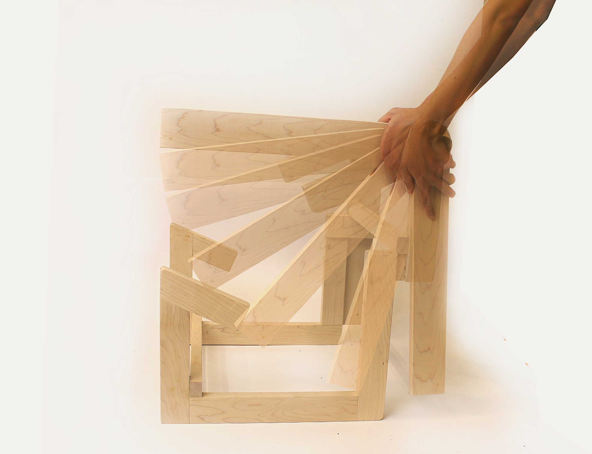

Flip Chair allows people to flip the chair and switch between kneeling and cross-legged postures. Compared to a common chair-style sitting, kneeling and cross-legged encourage neutral spine alignments and use more muscle activities.

I also did some other experiments around the concept of "active sitting". As a welding practice, I built a home swing and also tested a form that invites creative sitting postures on the frame.